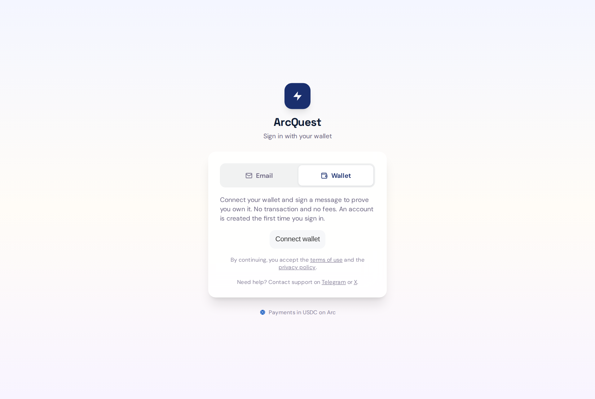
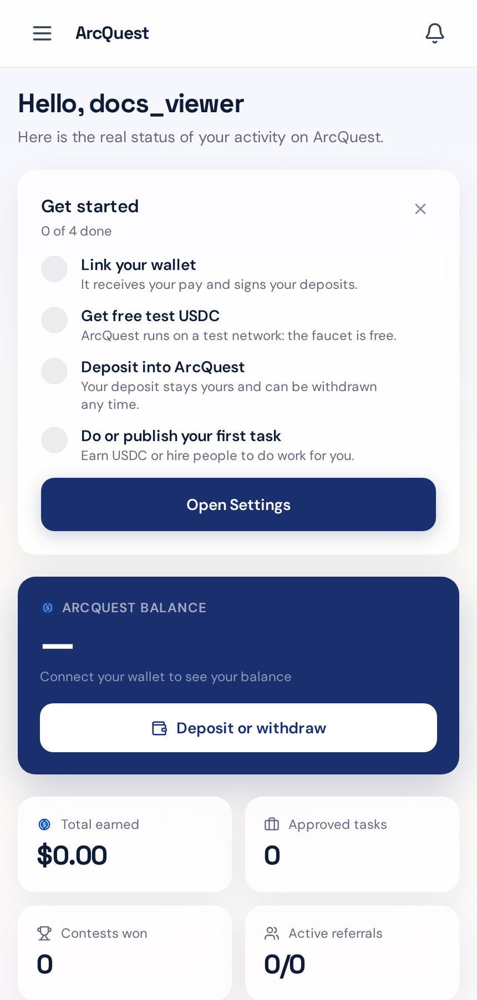
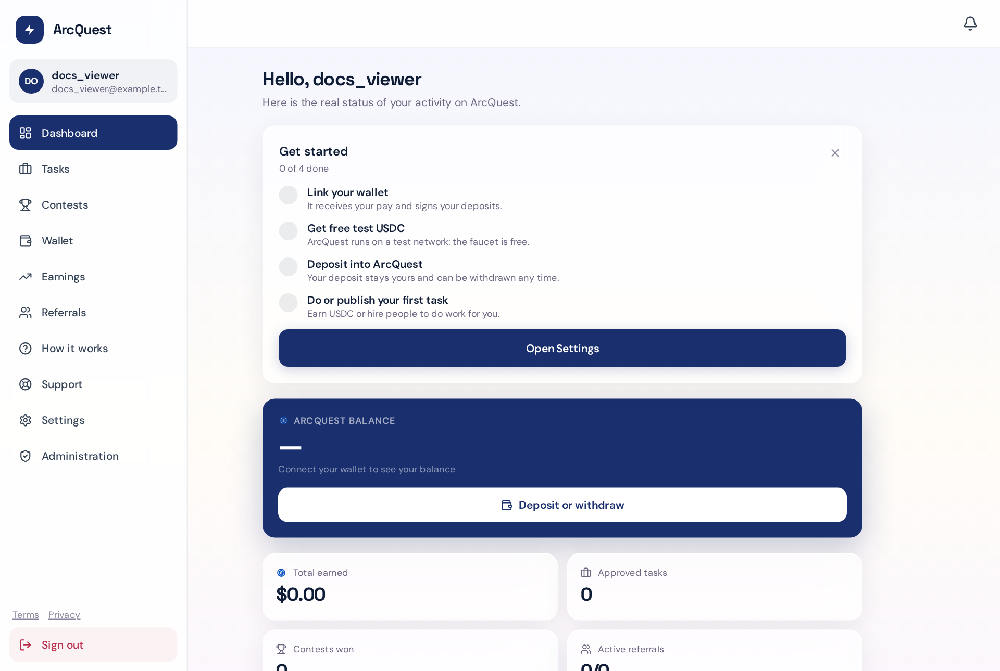
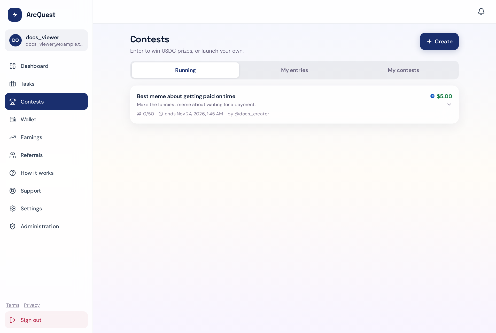
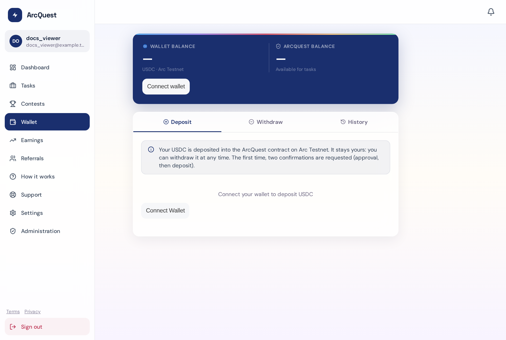
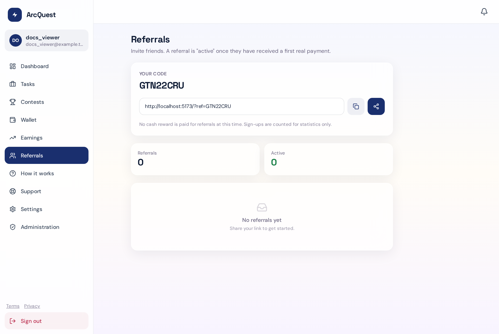
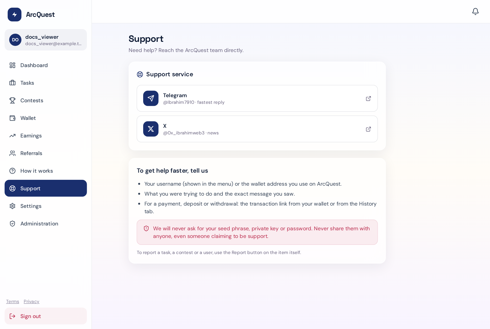
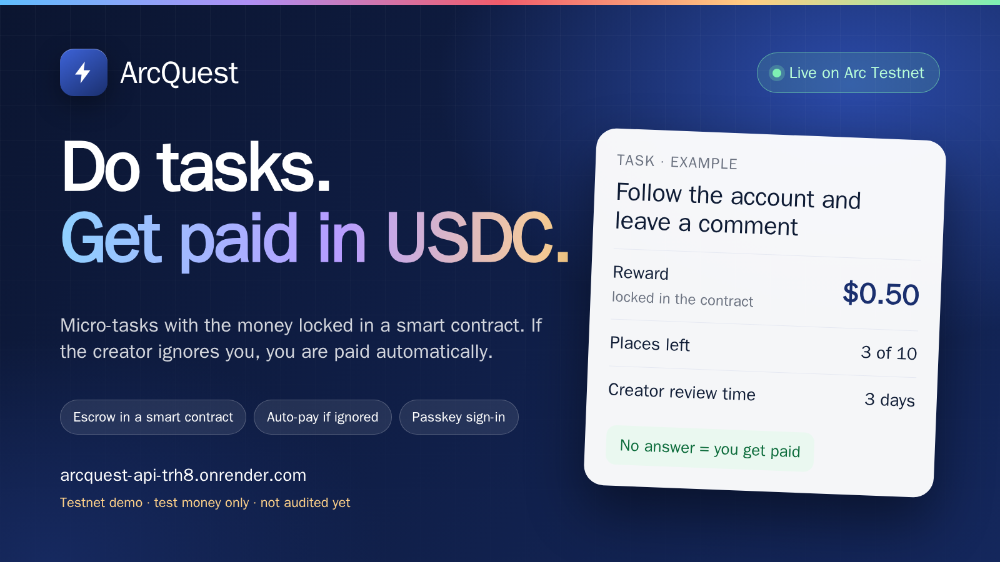

The look is calm and trustworthy: a soft light background, frosted "glass" cards, a deep navy accent, and plain English. It is mobile first; the same screens work from phone to desktop.
| Role | Value | Use |
|---|---|---|
| Ink | #0f1c35 | Text, headings, dark panels. |
| Accent | #1a2f6e | Primary buttons, active navigation, links, key numbers. |
| Accent hover | #1061a6 | Hover and focus emphasis. |
| Focus ring | #85b1ed | Keyboard focus. |
| Muted | #6b6580 | Secondary text. |
| Subtle | #8a849c | Hints, disabled controls. |
| Success | #1a8047 | Amounts earned, confirmed, approved. |
| Danger | #ba2b4c | Errors, rejections, sign-out. |
| Page background | #f4f6ff to #fffcf7 to #f8f4ff | Vertical soft gradient behind all pages. |
| Element | Specification |
|---|---|
| Glass card | Background white at 72 percent, blur 24 px with saturation 180 percent, 1 px white border at 68 percent, shadow 0 8px 32px rgba(15,28,53,.07) plus an inner top highlight. Radius 16 px. |
| Inputs | Radius 12 px, white at 60 percent, 1 px border ink at 12 percent, 13 px text. |
| Primary button | Accent fill, white text, soft accent shadow; disabled state is grey with no shadow. Full width on forms. |
| Ghost button | Accent at 7 percent fill, 1 px accent border at 12 percent, accent text. |
| Pills and chips | Fully rounded. Status colours: pending amber, approved green, rejected red, disputed purple, refunded and split grey. |
| Tabs | Segmented control on a tinted track; the active tab is a raised white chip. |
| Hero balance card | Deep navy panel with a thin multi-colour line on top, two balances side by side (wallet and ArcQuest), address chip and disconnect button. |
The mark is a white lightning bolt in a navy rounded square next to the word "ArcQuest". Social images (banner, protection flow, card) are produced from HTML and live outside the repository.
Captures come from a test environment with demonstration data (sample tasks and a sample contest). Names shown are test accounts.
















| Risk | Mitigation |
|---|---|
| Theft of user funds | No owner, no upgrade, no pause. Withdraw pays only the caller. Approve, reject, release and reclaim are restricted to the funder. The arbiter can only choose between paying the worker and refunding the creator. Exact-amount approvals. |
| Fake claims and slot flooding | A claim needs an EIP-712 permit from the server key, issued only after account, proof, deadline and slot checks. One claim per worker and job. Rotating the signer is immediate. |
| Forged payment or funding notices | The server verifies the transaction receipt and event arguments (job id, funder, amounts) and rejects reused hashes. Submission status is read from the contract, not from the browser. |
| Replay of signatures | Wallet sign-in nonces are single use and expire. Permits expire in 30 minutes and cannot be reused. |
| Account takeover | Argon2 password hashes; session tokens stored hashed; HttpOnly SameSite=Lax cookie, Secure in production; rate limits; generic errors on login and reset; a reset ends all sessions; reset and confirmation tokens are hashed, single use and expire. |
| Abusive uploads | Only PNG, JPEG, WebP (checked by file signature), 3 MB, served with no-sniff headers; only the owner, the relevant creator and admins can read. |
| Injection and cross-site attacks | Parameterised SQL everywhere; React output escaping; JSON-only write routes; same-origin cookies. |
| Admin misuse | Role checked in the database on every request; every admin action written to an audit log; admins have no access to funds. |
| Secrets | Keys and passwords live only in environment variables on the server. The only credentials in the browser bundle are the public client key and public addresses. |
| Provider outage or regional blocking | Ordered RPC fallback in browser and server; clear retry messages; background reconcile of submissions. |
| Layer | What is covered |
|---|---|
| Contract (Foundry) | 142 tests: every function, revert paths, timing boundaries to the second, permits (valid, expired, wrong signer, replay), slot limits, odd-amount 50/50 split, arbiter handover, fuzz tests, three invariants (solvency, exact conservation, locked and active counters). Static analysis and two automated security reviews. |
| Server (bun test) | 22 tests: accounts and sessions, wallet sign-in and nonce replay, anti-cheat rules (one claim per account, concurrent slot requests), permits, uploads, admin access, reports, email flows (confirmation, reset, expiry, enforcement on a second server instance), the API-to-UI field compatibility check. |
| Real transactions | Two scenarios on Arc Testnet with test wallets: protected task from creation to approval, rejection, dispute and the refusal of stolen or replayed permits; and a contest from funding to a paid prize. |
| Browser (Playwright) | Sign-up, all pages, mobile layout, wallet sign-in with an injected test wallet, deposit, publish, submit, approve, reject, dispute, admin dispute list, withdraw, blocked-RPC simulation, passkey creation with a virtual authenticator against the live site. |
| Static checks | oxlint (type-aware) and TypeScript for the frontend and the server. |
| Name | Purpose |
|---|---|
| DATABASE_URL | Postgres connection (secret). |
| PORT / API_PORT | Listening port. |
| PUBLIC_URL | Public site address used in email links (required in production). |
| COOKIE_SECURE | Secure cookie flag, true over HTTPS. |
| ADMIN_EMAILS / ADMIN_WALLETS | Accounts that receive the admin role. |
| VITE_VAULT_ADDRESS, VITE_VAULT_DEPLOY_BLOCK | Contract address and block, also embedded in the frontend build. |
| CLAIM_SIGNER_PRIVATE_KEY | Server key for claim permits (secret). Its address must equal the contract's claim signer. |
| RPC_URL_Arc_Testnet | Optional keyed RPC for the server only. |
| VITE_CLIENT_KEY, VITE_CLIENT_URL, VITE_PASSKEY_DOMAIN | Circle Modular Wallets client key (public, domain-restricted), service address, and the hostname where passkeys are enabled. |
| BREVO_API_KEY, EMAIL_FROM, EMAIL_FROM_NAME | Email sending (secret key; the sender must be verified at the provider). |
| REQUIRE_EMAIL_VERIFICATION | Force confirmation without a provider (tests). |
| Item | State |
|---|---|
| External security audit | Not done. Required before any mainnet use. |
| Network fees for actions | Extension wallets pay small fees to submit a claim, approve, reject, collect and withdraw. Passkey wallets are built to use sponsored fees; end-to-end confirmation of sponsored deposits should be re-checked after the fee-floor fix is live. A relayer for all wallets is a design option. |
| Founder revenue | No platform fee yet. Planned design: a capped fee fixed when a task is created, charged to the creator on top of the reward and taken only on rewards actually paid; this needs a contract change and a new deployment. |
| Local money (mobile money) | Removed from scope. Needs a payment partner and compliance work. |
| Rate limiting | In memory; resets on restart and is per instance. |
| Hosting tier | Free instances sleep; the first request is slow. |
| Regional access | Some countries are blocked by the primary RPC; fallbacks and a retry message are in place. |
| Referrals | Counter only, no payout. |
| Wallet history | Only operations recorded after the history feature was added. |
| Email deliverability | Improves with a sender on your own domain. |
| Term | Meaning |
|---|---|
| Arc | A Circle-backed EVM network where USDC is the gas token. |
| USDC | The dollar stablecoin used for every amount in the product. |
| Escrow | Money locked in the contract until rules release it. |
| Claim | A worker's registered submission for a job in the contract. |
| Permit | A signed message from the platform key saying which wallet may register a claim. |
| Review period | Time the creator has to approve or reject before the worker can be paid automatically. |
| Dispute | A worker's challenge of a rejection, decided by the arbiter. |
| Arbiter | The wallet allowed to settle disputes between two outcomes only. |
| Passkey | A device-based credential (fingerprint, face or device code) used instead of a password or seed phrase. |
| Smart account | A contract wallet controlled by a passkey; sends user operations through a bundler. |
| Paymaster | A service that pays network fees on behalf of the user. |
| RPC | The server a client uses to read the blockchain or send transactions. |
| Reconcile | The background job that copies chain state into the database. |
End of document. No secret, key, password, connection string or environment value is included.